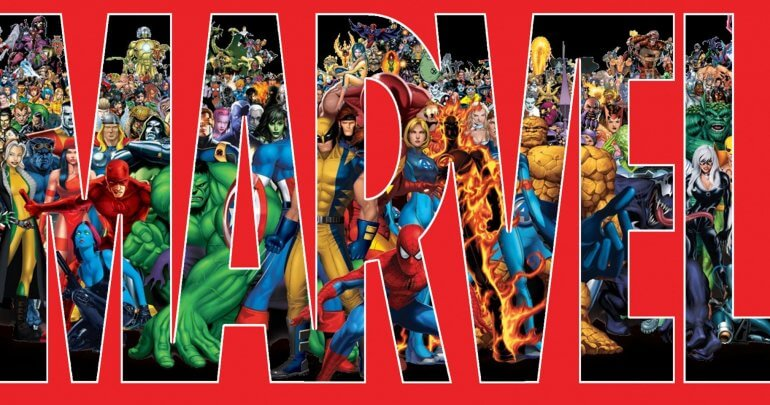

Marvel
Ex-aliado dos X-Men, e agora vilão, fica misteriosamente mais poderoso em HQ da Marvel
Os Vingadores estão em um desafio mais difícil que enfrentar um Celestial. Em Avengers #9, o grupo de heróis descobre que Namor, o Rei de Atlantis da Marvel, está mais poderoso do que nunca. Desde a última edição da revistinha dos Vingadores, Namor, que chegou até a ser aliado dos heróis, principalmente dos X-Men, declarou guerra contra a superfície por conta das catástrofes cometidas pela Roxxon Corporation contra a natureza. Na aventura, Namor, que costumava ser derrotado pelos Vingadores, conseguiu segurar em cada mão Thor e Homem de Ferro, e não sentiu cócegas com um golpe da Capitã Marvel. O superpoder vem chamando atenção dos heróis.